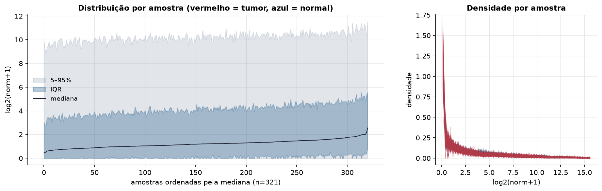
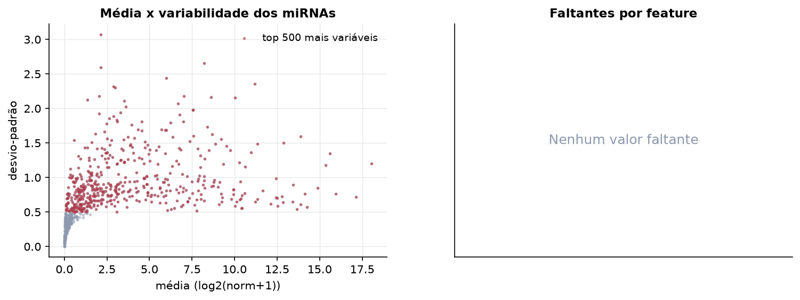
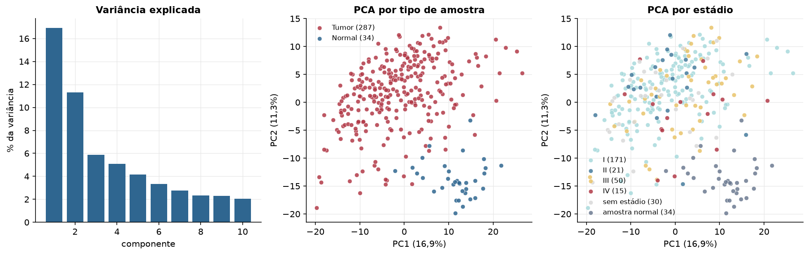
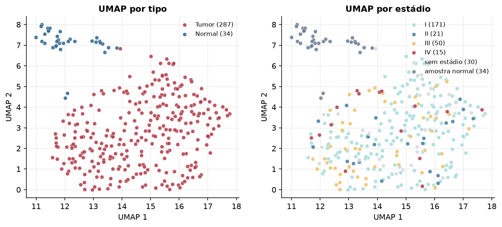
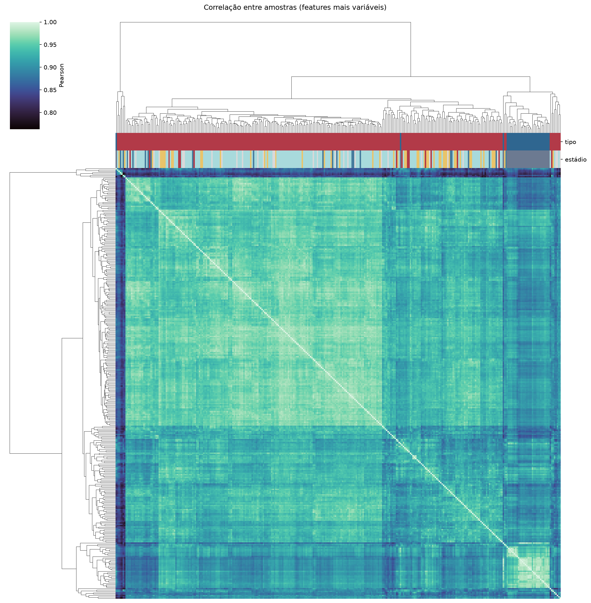
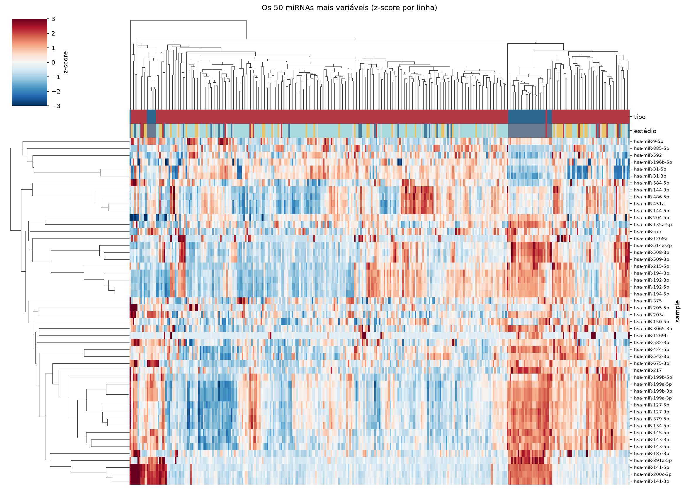
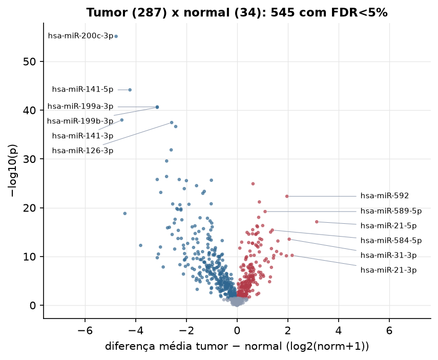
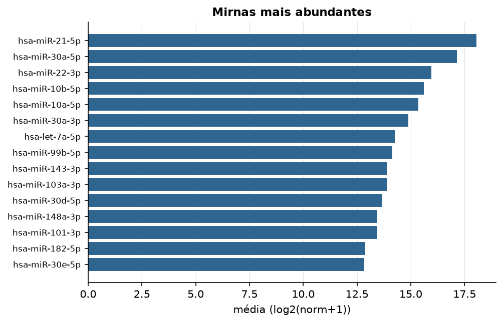

KIRP · miRNA-seq (PanCanAtlas)
miRNA maduro, normalizado e corrigido por lote (EB), log2(x+1) · gerado em 21/10/2026 23:05
743miRNAs
287amostras tumorais
34amostras normais
0,0%valores faltantes
Fonte: PanCanAtlas (pancanMiRs_EBadjOnProtocolPlatformWithoutRepsWithUnCorrectMiRs_08_04_16.xena)
Fita madura (5p/3p) já normalizada. As contagens brutas por precursor estão no relatório de contagens.
Principais resultados
- 743 miRNAs medidos em 321 amostras (287 tumorais e 34 normais); 0,0% dos valores estão faltando.
- Os dois primeiros componentes principais explicam 16,9% e 11,3% da variância das features mais variáveis.
- Correlação mediana entre amostras: 0,93.
- Amostras com correlação muito abaixo das demais (possíveis outliers técnicos): TCGA-A4-7915-01, TCGA-P4-A5E8-01, TCGA-B3-4104-01, TCGA-J7-A8I2-01.
- Tumor x normal: 545 miRNAs diferentes com FDR < 5% (232 maiores no tumor, 313 maiores no normal; 34 pacientes têm o par tumor-normal).
- Mais aumentados no tumor: hsa-miR-1254, hsa-miR-592, hsa-miR-219a-1-3p, hsa-miR-589-5p, hsa-miR-616-5p, hsa-miR-21-5p, hsa-miR-671-5p, hsa-miR-423-3p.
- Mais reduzidos no tumor: hsa-miR-200c-3p, hsa-miR-141-5p, hsa-miR-199a-3p, hsa-miR-199b-3p, hsa-miR-141-3p, hsa-miR-126-3p, hsa-miR-145-3p, hsa-miR-139-5p.
- Associações clínicas com p < 0,05 nos componentes principais: PC1 com estádio (p=0.029); PC2 com estádio (p=0.00042); PC2 com sexo (p=0.0076); PC1 com idade (p=0.023); PC2 com idade (p=0.013); PC2 com sobrevida (p=1.6e-08).
Distribuição dos valores


Estrutura das amostras




Tumor x normal

Features mais diferentes entre tumor e normal
| sample | diferenca_tumor_menos_normal | t | p | fdr |
|---|---|---|---|---|
| hsa-miR-200c-3p | -4.769 | -28.243 | 7.58e-56 | 5.6e-53 |
| hsa-miR-141-5p | -4.222 | -25.731 | 7.07e-45 | 2.61e-42 |
| hsa-miR-199a-3p | -3.147 | -20.819 | 2.17e-41 | 5.05e-39 |
| hsa-miR-199b-3p | -3.148 | -20.769 | 2.74e-41 | 5.05e-39 |
| hsa-miR-141-3p | -4.542 | -24.277 | 1.06e-38 | 1.57e-36 |
| hsa-miR-126-3p | -2.577 | -22.87 | 3.51e-38 | 4.32e-36 |
| hsa-miR-145-3p | -2.418 | -21.091 | 2.31e-37 | 2.44e-35 |
| hsa-miR-139-5p | -2.597 | -20.708 | 1.42e-32 | 1.31e-30 |
| hsa-miR-199a-5p | -2.775 | -17.039 | 2.68e-30 | 2.2e-28 |
| hsa-miR-139-3p | -2.778 | -20.397 | 4.07e-27 | 3.01e-25 |
| hsa-miR-145-5p | -3.147 | -18.471 | 1.66e-26 | 1.03e-24 |
| hsa-miR-143-3p | -2.28 | -15.811 | 1.67e-26 | 1.03e-24 |
| hsa-let-7e-3p | -1.012 | -15.122 | 2.35e-26 | 1.34e-24 |
| hsa-miR-126-5p | -1.997 | -17.679 | 2.86e-26 | 1.51e-24 |
| hsa-miR-1254 | 0.63 | 13.643 | 1.25e-25 | 6.17e-24 |
| hsa-miR-450a-5p | -1.596 | -13.982 | 3.07e-25 | 1.42e-23 |
| hsa-miR-214-3p | -2.08 | -19.062 | 1.26e-24 | 5.46e-23 |
| hsa-miR-542-5p | -1.291 | -14.144 | 4.56e-24 | 1.87e-22 |
| hsa-miR-129-5p | -3.007 | -20.344 | 7.44e-24 | 2.89e-22 |
| hsa-miR-542-3p | -1.348 | -11.672 | 1.12e-23 | 4.15e-22 |
| hsa-miR-592 | 1.966 | 13.602 | 4.65e-23 | 1.64e-21 |
| hsa-miR-219a-1-3p | 0.88 | 13.664 | 6.65e-22 | 2.23e-20 |
| hsa-miR-125b-5p | -1.02 | -12.164 | 1.6e-21 | 5.14e-20 |
| hsa-miR-10b-5p | -2.537 | -16.292 | 1.74e-21 | 5.36e-20 |
| hsa-miR-4662a-5p | -1.897 | -14.842 | 2.01e-21 | 5.93e-20 |
| hsa-miR-195-5p | -2.252 | -15.744 | 2.49e-21 | 7.08e-20 |
| hsa-miR-424-5p | -2.374 | -13.604 | 1.51e-20 | 4.14e-19 |
| hsa-miR-143-5p | -2.212 | -13.692 | 1.78e-20 | 4.71e-19 |
| hsa-miR-10b-3p | -2.335 | -15.616 | 2.26e-20 | 5.77e-19 |
| hsa-miR-214-5p | -2.213 | -15.02 | 3.06e-20 | 7.55e-19 |
Associação com variáveis clínicas
p-valores da associação dos três primeiros componentes principais (só tumores) com estádio (Kruskal-Wallis), sexo (Mann-Whitney), idade (Spearman) e sobrevida global (Cox univariado).
| estádio (Kruskal) | sexo (Mann-Whitney) | idade (Spearman) | sobrevida OS (Cox) | |
|---|---|---|---|---|
| PC1 (17,5%) | 0.029 | 0.907 | 0.022 | 0.114 |
| PC2 (8,8%) | 0.00042 | 0.008 | 0.013 | 1.63e-08 |
| PC3 (5,4%) | 0.19 | 0.088 | 0.366 | 0.218 |
Mais abundantes
